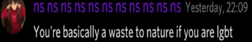
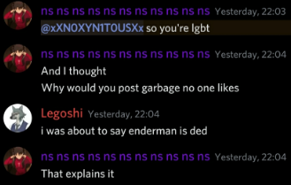
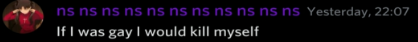
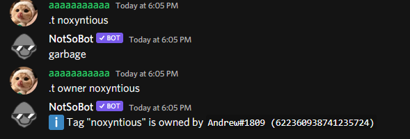
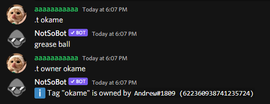
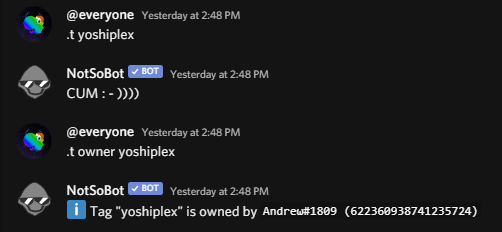
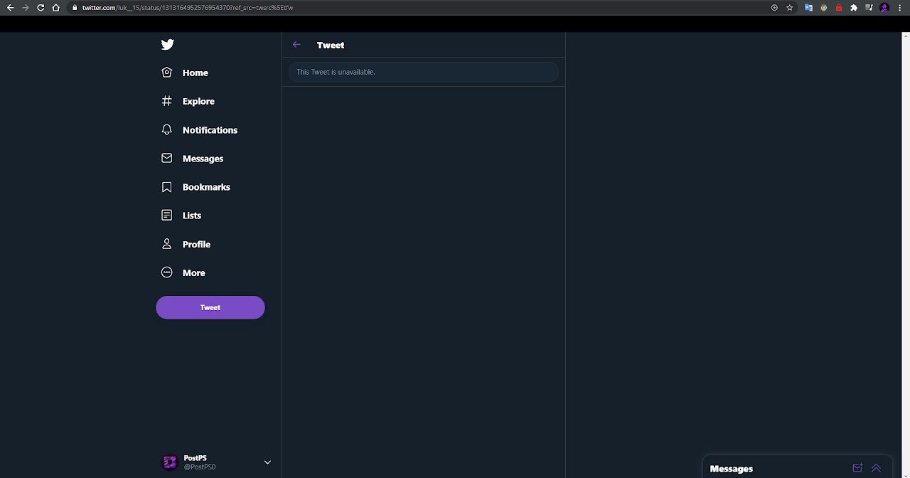
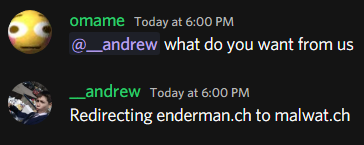

Streisand Enderman
October 16, 2020
The Streisand effect is a social phenomenon that occurs when an attempt to hide, remove, or censor information has the unintended consequence of further publicizing that information, often via the Internet.Malwatch • Endermanch (Will Redirect)
Enderman is homophobic



Here's is the start of the story.
Enderman.ch Domain
Apparently when the Enderman.ch website got reported for hosting Malware, It was bought out by Bob Pony for jokes.
Enderman's Discord Server
Enderman's server stayed dead for months, Then he deleted the public discord probably because people were spreading the image of him being homophobic.
CTAC.MALWAT.CH
Later, He made a new video and his fanbase went to ctac.malwat.ch and find the enderman.ch Discord invitation. They jump from 20 to 170 in weeks.
The Streisand effect
Currently, Andrew is trying to hide his existence of homophobic, Clickbait, and misleading past, He made a series of posts on Twitter and YouTube addressing the situation calling them site hosters malicious and fake. In a recent post he said that others channels that are called "Enderman" are fake scams which is bad since you have a fanbase of 500K attacking small channels because they have Minecraft Mob name. Enderman's fanbase later started spamming it the web hoster's Discord server.
Media Proof
Andrew is a bad person, (or brand) because he's homophobic, Has clickbait in his videos, Manipulative liar, and a de-platformer.
Please do not hire Andrew for anything(Like programming, Something or managing a brand he'll just ruin it). He got so angry he made NotSoBot tags about the web hoster and his friends.
 |
 |
 |
| Simply garbage | the okame tag containing grease ball | The Yoshiplex containing "cum" |
He told Luk_ to delete his tweet calling him out with NoEscape being 000.exe with skidded code

Here's the embed, It doesn't show correctly because it deleted.
View the tweet URL, It says it's unavailableits pretty much just 000.exe modified with skidded code anyway
— luk (@luk__15) October 5, 2020
He told Omame to redirect Enderman.ch to Malwat.ch

In a few seconds of opening Enderman.ch you can see the message of it saying "You're being redirected to malwat.ch"
Here is the Enderman.ch website (It shows Malwat.ch now)